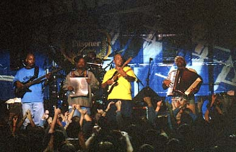

Efes Pilsner Blues Festival
- 1999
|
 |
|
Аншлаговый успех прошлогоднего дебюта Эфесовского блюз-фестиваля в Москве подсказал в этом году назначить дополнительный третий концерт. И вновь не удалось избежать аншлага, все билеты были проданы еще за неделю до открытия - разве что, по сравнению с прошлым годом, у спекулянтов "упали" цены. Прежде чем оценивать его блюзовую весомость, нужно понять природу именного этого "блюз-фестиваля". С 1989 года проводит его (турецкая, вроде бы, но сам Эфес на это почему-то обижается) пивная фирма. Смысл состоит в том, что не очень дорогие блюзовые артисты выступают в турецких и европейских городах. В основном, концерты проходят в гостиничных залах. Это чисто рекламная акция, один вечер - и поехали дальше. Только в Москве и Анкаре этот передвижной фестиваль занимает действительно вместительный концертный зал общегородского уровня. И в этих обстоятельствах фестиваль, на три дня переполошивший весь город, начинает вызывать некоторые вопросы. Трехдневный фестиваль, в котором только три участника? Конечно, участники варьируют часть своего репертуара, но в целом - одна концертная программа на все три дня. А звук? Типично грязный для дэнс-холла МДМ; однако и в общем балансе то и дело "тонули" солисты. Те, кто в толпе перед сценой чувствует себя как рыба в воде, получили звук неиспорченным. Но за пределами небольшого равнобедренного треугольника звук превращался в невнятное месиво. Может быть, все потому, что пропаганда пива остается главным фактором; и на рекламу уходит львиная часть бюджета фестиваля, а на культурно-музыкальную - то, что осталось. Но и за это московские любители блюза должны "Эфесу" в ножки кланяться: не было бы в Москве блюз-фестиваля - да пивной маркетинг помог. Конечно, настоящий блюз-фестиваль - нечто совершенно другое. Но на безблюзье и такой - за счастье. И вроде как ладно, что более половины исполненных песен даже формально не подходят под определение "блюз". Можно и "Битлов" послушать в исполнении братьев Холмс, и "Роллинг стоунз" пополам с Бобом Марли под аккордеон и саксофон, и даже "AC/DC", пока Лонг Джон Хантер демонстративно стоял на сцене, держа руки за спиной - спасибо вообще, что приехали. И кто расслабился - тот получил удовольствие. |